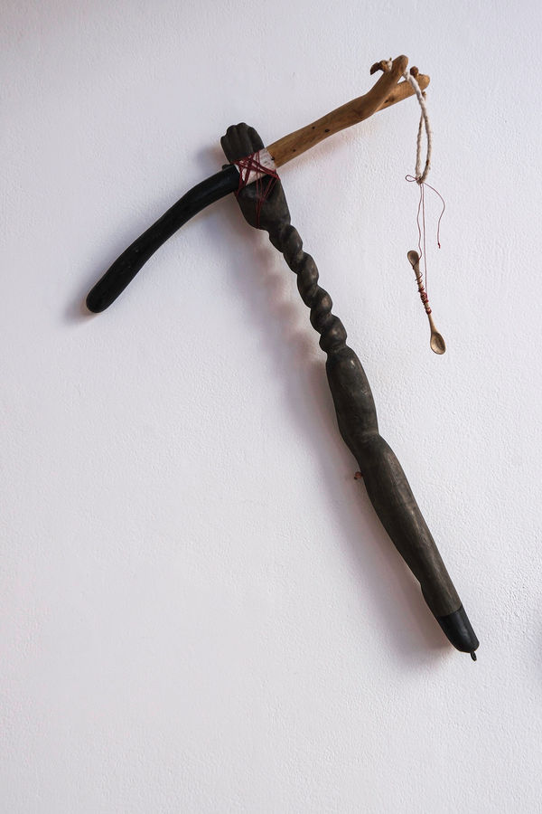
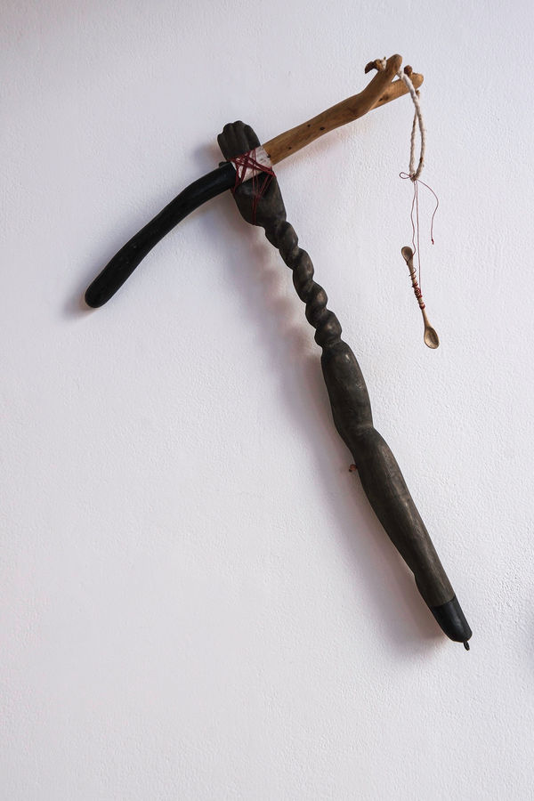

Limb Stories and other Bodily Extensions
October 1 - December 18, 2023
Sculptural works by Ann Schnake and Selby Sohn, in dialogue with philosopher Joseph Tanke
In this body of work by Selby Sohn and Ann Schnake, the artists push on questions of where are bodies begin, end and join each other. With limbs that extend, bodily parts remixed, and poetic prosthetics of questionable utility, they investigate destabilizing concepts of self and how to interrupt the daily claims that capital makes on the body, with an interest in recreating new flows, possibility, healing powers, and re-imagination of other subjectivities and worlds.
Ann, having been a nurse for many years, thinks about the human and collective body in somber terms, reflecting on trauma's particular ability to interrupt. Her prior work is now a phantom limb, the ethereal action of aesthetic practice born out of a physical practice. She stands at a high counter reminiscent of an operating table, suturing, carving, and constructing sculptural elements for magic rooms.
Selby makes objects and actions on the brink of utility. She places her work in consideration of both the tech industry's hyperbolic usefulness and in art history's valuing of objects without utility. Her projects involve wearable sculptures that think largely about queering use. Selby questions how by performing reality, we unhinge subjectivity.
"The contemporary form of exodus and the new barbarian life demand that tools become poetic prostheses liberating us from the conditions of modern humanity."
— Michael Hardt and Antonio Negri, Empire
 
